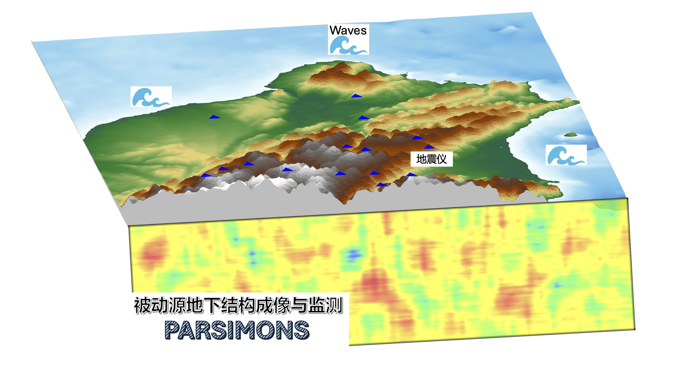
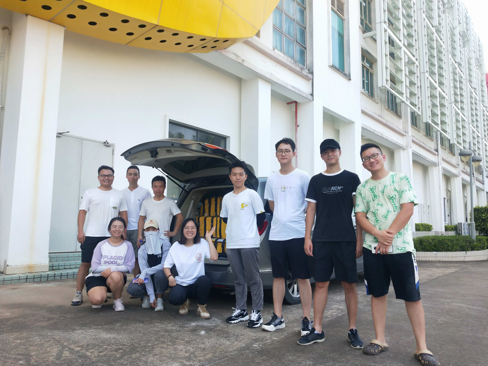
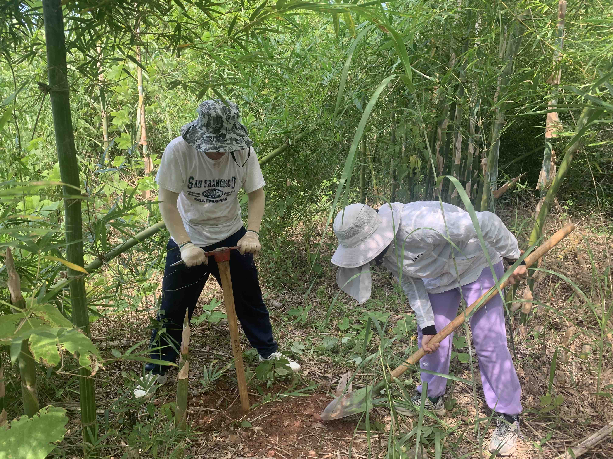
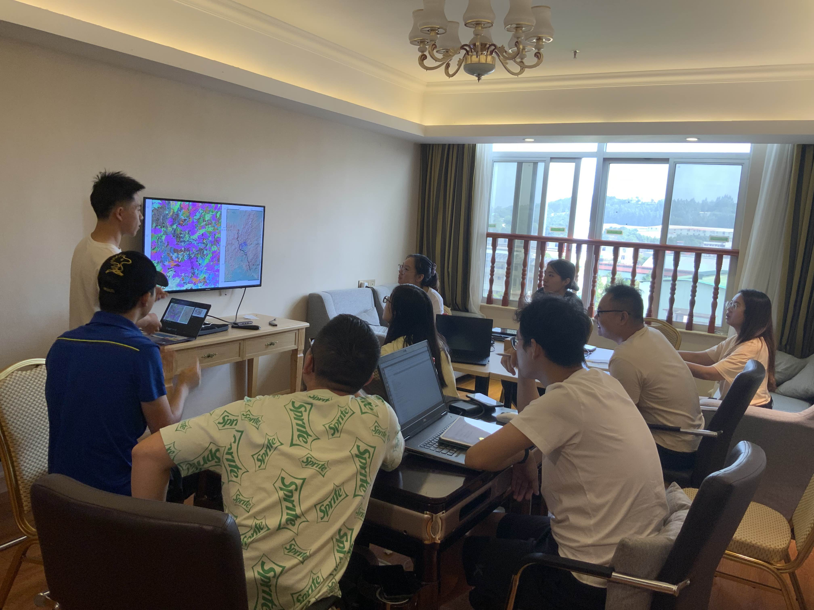

PARSIMONS:Passive And Reliable Seismic Imaging and Monitoring Of the Near Surface近地表结构被动源地震成像及监测特色:被动源、经济、可靠、环保 Parsimony
|
 |
| 主页 |
成员 |
研究方向 |
成果介绍 |
野外活动 |
联系我们 |
|
2021年华南野外：南岭成矿带
 整装待发  野外台站布设  室内理论学习 2022年华南野外：莲花山断裂及成矿带 2025年华南野外：郴州-临武断裂 |